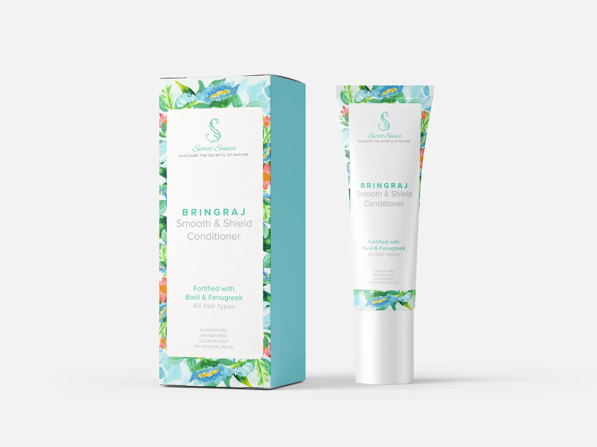
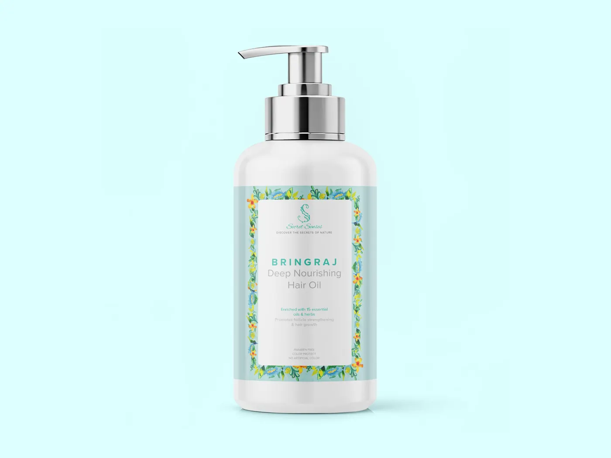
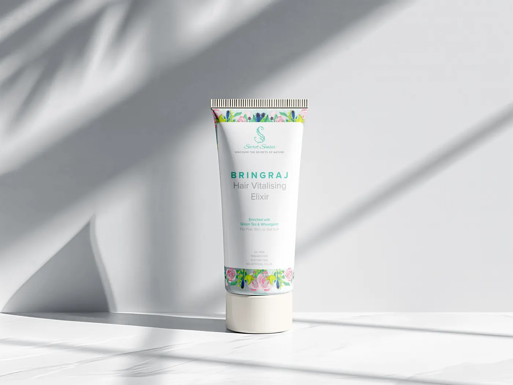
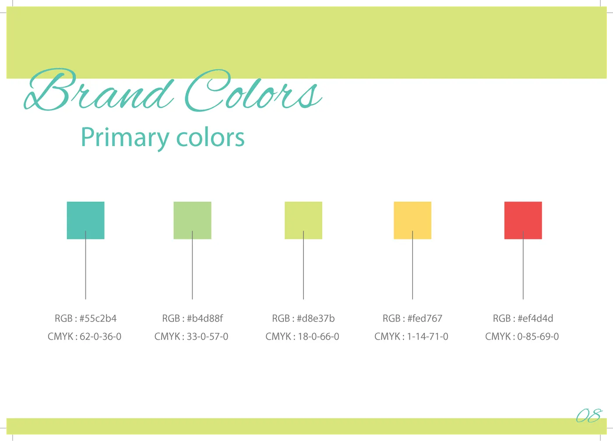
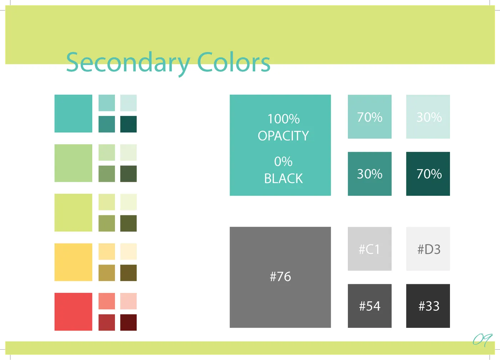

how the system grew
One flower, painted in a notebook. Watch it become a brand.
Scroll through four stages — sketch, motif, pattern, application.
Scroll down to watch the system grow from sketch to application. Four stages, each labelled.
01 the sketch
A single watercolor flower, painted in a notebook.
The whole identity starts here.
↓ multiplies
02 the motif
One flower becomes a vocabulary.
Flowers, leaves, paisley strokes — and a handwritten S.
↓ tiles
03 the pattern
The motifs tile into a repeating border.
Dense, but with room to breathe.
↓ applied
04 the application
The border lands on a bottle, a box, a tube.
The brand is now a thing you can hold.



01 the sketch: a single watercolor flower in a notebook
02 the motif: one flower becomes a vocabulary
03 the pattern: the motifs tile into a repeating border
04 the application: the border lands on a bottle, a box, a tube
and a palette to hold it all

